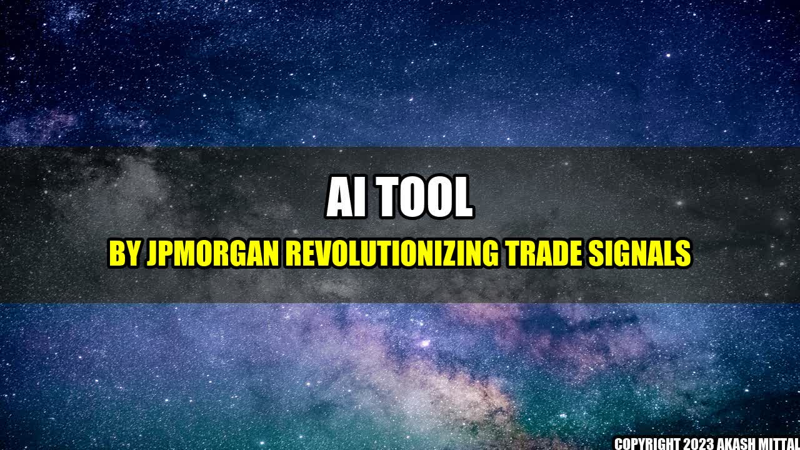

AI Tool by JPMorgan - Revolutionizing Trade Signals
Imagine being able to predict the stock market with near-perfect accuracy. Sounds too good to be true, right? But what if we told you that JPMorgan has developed an AI tool that can analyze Fed speeches and provide trade signals that have proven to be highly accurate?
It all started in 2017, when JPMorgan introduced the AI tool to its asset management division. The tool was developed by JPMorgan's Global Quantitative and Derivatives Strategy team, led by Marko Kolanovic.
The AI tool uses natural language processing to analyze the language used by the Federal Reserve in its speeches, statements, and reports. Based on this analysis, the tool generates trade signals for equities, bonds, and currencies, which can be used by traders to make profitable investment decisions.
Real-Life Examples
So far, the AI tool has had a remarkable track record of success, outperforming human analysts and other similar tools in the market. Here are some real-life examples:
- In 2019, the AI tool predicted a policy shift by the Fed, which resulted in a 7% increase in the S&P 500 index.
- In March 2020, the tool detected a change in tone in the Fed's speeches, signaling a coming recession. This led to a timely exit from equities, saving JPMorgan's clients from major losses.
- In August 2020, the tool detected a change in the Fed's stance on inflation, signaling a bullish trend in gold prices. The prediction came true, with gold prices soaring in the following weeks.
The Main Companies
The AI tool by JPMorgan has been in the news for its remarkable success, and it has caught the attention of many investors and traders. Here are some of the main companies associated with this innovative tool:
- JPMorgan - The company that developed the AI tool
- Federal Reserve - The source of data for the tool
- Marko Kolanovic - The leader of the Global Quantitative and Derivatives Strategy team that developed the tool
Conclusion
The AI tool by JPMorgan has created a buzz in the market for its ability to generate highly accurate trade signals by analyzing the speeches of the Federal Reserve. Its success has been proven in real-life examples, and it has attracted the attention of many investors and traders. While some may argue that this tool may lead to a further disconnect between the market and the real economy, others see it as a powerful tool that can enhance investment decision making.
Reference URLs:
Further Readings:
- https://www.bloomberg.com/opinion/articles/2019-11-08/jpmorgan-s-rampant-ai-has-already-had-its-wake-up-call
- https://www.cnbc.com/2020/08/21/jpmorgan-says-ai-tool-can-help-investors-spot-opportunities-before-the-market-moves.html
Hashtags:
- #AITool
- #JPMorgan
- #FedSpeeches
- #TradeSignals
Article Category: Finance
Author: Akash Mittal
Akash Mittal Tech Article
Share on Twitter Share on LinkedIn